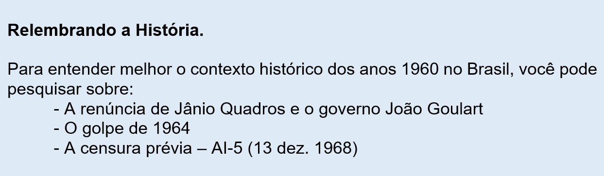
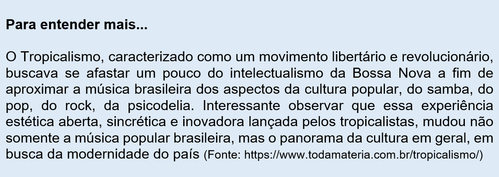

Capítulo 3: Brasil, década de 1960: O movimento cultural tropicalista
Contextualizando...
Questão-problema:
Desenvolvimento industrial, repressão política e efervescência cultural podem conviver em um mesmo período histórico?
(Fonte: Memorial da Democracia)

(Disponível em: https://oglobo.globo.com/cultura/tropicalia-comemora-50-anos-relembre-21947979)

Reconstruindo conhecimentos:
O Tropicalismo
(Fonte: http://tropicalia.com.br/v1/site/internas/movimento.php)
Início - III Festival de Música da TV Record (1967); fim – A.I. – 5 (13.12.1968)
Participantes do Festival: Caetano Veloso (“Alegria, Alegria”), Gilberto Gil (“Domingo no Parque”), Edu Lobo e Capinam (“Ponteio”), etc
“Tropicália ou panis et circensis” – Disco marcante do movimento, porque é marca do projeto tropicalista ; “Tropicália” – canção-síntese do Tropicalismo
Características:
- recuperação de alguns princípios do Modernismo de 22 (iconoclastia, crítica social) em especial o Movimento Antropofágico (1928)
- inovação de ritmo, moderno x arcaico, desigualdade social
- cultura brasileira (Nordeste, cidade, folclore...)
- linguagem poética, musical, variação temática e estética
- grafismo, em especial a recuperação do Concretismo (1952)
Vamos conhecer duas canções representativas do movimento tropicalista (confira também os vídeos, disponíveis nos links ao final das letras das canções):
Domingo no Parque
(Gilberto Gil)
O rei da brincadeira (ê, José)
O rei da confusão (ê, João)
Um trabalhava na feira (ê, José)
Outro na construção (ê, João)
A semana passada, no fim da semana
João resolveu não brigar
No domingo de tarde saiu apressado
E não foi pra Ribeira jogar capoeira
Não foi pra lá, pra Ribeira, foi namorar
O José como sempre no fim da semana
Guardou a barraca e sumiu
Foi fazer no domingo um passeio no parque
Lá perto da Boca do Rio
Foi no parque que ele avistou Juliana
Foi que ele viu
Foi que ele viu Juliana na roda com João
Uma rosa e um sorvete na mão
Juliana seu sonho, uma ilusão
Juliana e o amigo João
O espinho da rosa feriu Zé
E o sorvete gelou seu coração
O sorvete e a rosa (ô, José)
A rosa e o sorvete (ô, José)
Foi dançando no peito (ô, José)
Do José brincalhão (ô, José)
O sorvete e a rosa (ô, José)
A rosa e o sorvete (ô, José)
Oi, girando na mente (ô, José)
Do José brincalhão (ô, José)
Juliana girando (oi, girando)
Oi, na roda gigante (oi, girando)
Oi, na roda gigante (oi, girando)
O amigo João (João)
O sorvete é morango (é vermelho)
Oi girando e a rosa (é vermelha)
Oi, girando, girando (é vermelha)
Oi, girando, girando
Olha a faca! (olha a faca!)
Olha o sangue na mão (ê, José)
Juliana no chão (ê, José)
Outro corpo caído (ê, José)
Seu amigo João (ê, José)
Amanhã não tem feira (ê, José)
Não tem mais construção (ê, João)
Não tem mais brincadeira (ê, José)
Não tem mais confusão (ê, João)
Tropicália
(Caetano Veloso)
"Quando Pero Vaz Caminha
Descobriu que as terras brasileiras
Eram férteis e verdejantes,
Escreveu uma carta ao rei:
Tudo que nela se planta, tudo cresce e floresce.
E o Gauss da época gravou".
Sobre a cabeça os aviões
Sob os meus pés os caminhões
Aponta contra os chapadões
Meu nariz
Eu organizo o movimento
Eu oriento o carnaval
Eu inauguro o monumento
No planalto central do país
Viva a Bossa, sa, sa
Viva a Palhoça, ça, ça, ça, ça
Viva a Bossa, sa, sa
Viva a Palhoça, ça, ça, ça, ça
O monumento
É de papel crepom e prata
Os olhos verdes da mulata
A cabeleira esconde
Atrás da verde mata
O luar do sertão
O monumento não tem porta
A entrada é uma rua antiga
Estreita e torta
E no joelho uma criança
Sorridente, feia e morta
Estende a mão
Viva a mata, ta, ta
Viva a mulata, ta, ta, ta, ta
Viva a mata, ta, ta
Viva a mulata, ta, ta, ta, ta
No pátio interno há uma piscina
Com água azul de Amaralina
Coqueiro, brisa e fala nordestina
E faróis
Na mão direita tem uma roseira
Autenticando eterna primavera
E no jardim os urubus passeiam
A tarde inteira entre os girassóis
Viva Maria, ia, ia
Viva a Bahia, ia, ia, ia, ia
Viva Maria, ia, ia
Viva a Bahia, ia, ia, ia, ia
No pulso esquerdo o bang-bang
Em suas veias corre
Muito pouco sangue
Mas seu coração
Balança um samba de tamborim
Emite acordes dissonantes
Pelos cinco mil alto-falantes
Senhoras e senhores
Ele põe os olhos grandes
Sobre mim
Viva Iracema, ma, ma
Viva Ipanema, ma, ma, ma, ma
Viva Iracema, ma, ma
Viva Ipanema, ma, ma, ma, ma
Domingo é o fino-da-bossa
Segunda-feira está na fossa
Terça-feira vai à roça
Porém...
O monumento é bem moderno
Não disse nada do modelo
Do meu terno
Que tudo mais vá pro inferno
Meu bem
Que tudo mais vá pro inferno
Meu bem
Viva a banda, da, da
Carmem Miranda, da, da, da, da
Viva a banda, da, da
Carmem Miranda, da, da, da, da
Viva a banda, da, da
Carmem Miranda, da, da, da, da

A literatura urbana
Rubem Fonseca (1925 - 2020)
Obras principais:
Os prisioneiros (1963);
A coleira do cão (1965); Feliz Ano Novo (1975);
O cobrador (1980);
A grande arte (1983);
Vastas emoções e pensamentos imperfeitos (1988);
Agosto (1990);
A confraria dos espadas (1998).
A temática de seus contos é a desenfreada violência urbana nas grandes cidades e o constrangimento social na diferença visível entre pobres e ricos. Utilizando uma linguagem forte e bem delimitada, dependendo da classe social do personagem, normalmente usando expressões grotescas, Rubem Fonseca estabelece com clareza a realidade que se vive atualmente. Já em seus romances, ainda que mostre esta realidade brutal, costuma especificar mais seus motivos temáticos, como se pode perceber em: A grande arte (um especialista no manejo de facas), Vastas emoções e pensamentos imperfeitos (diamantes, cinema, literatura russa), O selvagem da ópera (vida do compositor brasileiro Carlos Gomes).
Dalton Trevisan (1925)
Obras principais:
A guerra conjugal (1969);
Cemitério de elefantes (1970);
O vampiro de Curitiba (1970).
Apurado debulhar do provincianismo curitibano e seus conceitos arcaicos de relações pessoais e conjugais, Dalton Trevisan retrata, também, a violência da cidade. Não poupando seus contos de expressões grosseiras e rápidas, constrói personalidades desequilibradas em seus personagens, como é o exemplo típico de Nelsinho, em O Vampiro de Curitiba. Usa do conto curto e da linguagem concisa para retratar o cotidiano banal, gratuito de mesquinharia e estupidez humanas, e o violento dos personagens com nomes, normalmente, corriqueiros (os Joões e as Marias).
João Antonio (1937-1997)
Obras principais:
Malagueta, Perus e Bacanaço (1963);
Leão-de-Chácara (1975).
Recupera o submundo paulistano, em diversos contos, com sua típica malandragem e procura de sobrevivência num mundo onde o esperto procura se dar bem. Sua obra principal, Malagueta, Perus e Bacanaço, registra a vida dos meninos de rua. Os jogos de sinuca, a picaretagem, as prostitutas, os bêbados e os desocupados são presenças constantes em sua obra. A gíria de cada grupo social é bem explorada.
Lygia Fagundes Telles (1923)
Obras principais:
Antes do baile verde (1970);
As meninas (1973).
Retrata em sua obra o detalhe e o intimismo de seus personagens, não raro buscando o fantástico da situação. Com enredos
enxutos, mostra as dificuldades de relação entre os protagonistas, revelando a solidão, os desgostos e as desventuras da vida.
Antes do baile verde (1970) é uma reunião de contos com temáticas como o desamparo do homem frente à vida; a dificuldade de
comunicação entre os personagens, com seu desencontro e com sua solidão; a crítica à estrutura familiar burguesa e sua vida
íntima; a introspecção psicológica dos personagens e dos cenários; as situações-limites que sustentam a liberdade versus a
não liberdade, o sonho versus a realidade, o desejo versus a realização e, finalmente, o impossível versus o possível; as
dificuldades de explicação definitiva para situações vividas; a busca de referenciais por parte dos personagens; o exotismo.
Adélia Prado (1936)
Obras principais:
Poesia – Bagagem (1976);
O Pelicano (1987);
A faca no peito (1988);
Prosa – Solte os cachorros (1979);
Cacos para um vitral (1980).
Bagagem é considerado o livro de estreia de Adélia Prado. Apoiado em epígrafes bíblicas, a autora constrói um mundo poético
cercado por um lirismo e por uma ironia desconcertantes, na medida que tais características investem na alegria e na tristeza.
O caráter memorialístico assume condição única e, da vida boa, da alegria e da esperança, surgem emblemáticas a morte e a velhice.
Outro tema forte é o da mulher e o seu significado, que resgatam uma elaboração consciente de ser e de estar específicos. O sensorialismo
é outro recurso poético utilizado pela autora: os gostos, os cheiros, o visual, o cromático, as formas e o paladar. Cita, também,
em alguns poemas as figuras de João Guimarães Rosa, Fernando Pessoa, Carlos Drummond de Andrade e Manuel Bandeira.
Em O Coração disparado, a religiosidade se faz presente em sua poética. A epifania, ou seja, a aparição divina é metaforizada no
personagem Eliud Jonathan, que aparecerá, tempos depois, em O Pelicano.
Em Terra de Santa Cruz, como sugere o título, temos o Brasil e a religiosidade. Adélia Prado também faz algumas referências literárias,
como as de Carlos Drummond de Andrade, João Cabral de Melo Neto, Carlos Nejar, Nélida Piñon e Casimiro de Abreu. A leitura e a reflexão
têm espaço em Terra de Santa Cruz, juntamente com o erotismo, o cromatismo, a felicidade, a esperança e a salvação moral e religiosa dos homens.
Em seu livro mais importante, O Pelicano, Adélia Prado reconstrói, em alguns poemas, textos do Velho Testamento, explorando citações bíblicas.
A figura do personagem Jonathan, que já aparecera em O coração disparado, aponta para a religiosidade, para a resistência, para Jesus. A figura
divina e o significado das palavras ganham dimensão importante nesta obra. Na figura do animal, o pelicano, a metáfora da ressurreição desponta como simbologia.
Em A faca no peito, as indagações acerca da essência humana e divina têm destaque, ainda que o tema central da obra seja a própria poesia e o seu
criador, o poeta. Novamente a imagem de Jonathan faz-se presente, estabelecendo relação com o amor e o poeta.
Com licença poética
(Adélia Prado)
Quando nasci um anjo esbelto,
desses que tocam trombeta, anunciou:
vai carregar bandeira.
Cargo muito pesado pra mulher,
esta espécie ainda envergonhada.
Aceito os subterfúgios que me cabem,
sem precisar mentir.
Não sou feia que não possa casar,
acho o Rio de Janeiro uma beleza e
ora sim, ora não, creio em parto sem dor.
Mas o que sinto escrevo. Cumpro a sina.
Inauguro linhagens, fundo reinos
— dor não é amargura.
Minha tristeza não tem pedigree,
já a minha vontade de alegria,
sua raiz vai ao meu mil avô.
Vai ser coxo na vida é maldição pra homem.
Mulher é desdobrável. Eu sou.
(Disponível em: http://www.releituras.com/aprado_bio.asp)
Um poeta peculiar: Manoel de Barros (1916-2014)
Manoel de Barros é um desarticulador da palavra, fazendo com que elas se construam de modo inabitual até formarem a imagem ilógica. Rastreando o inventário das coisas e dos animais, o poeta se utiliza do pantanal mato-grossense como elemento de seu fazer poético. Em Gramática expositiva do chão, explora o ilogismo; em O guardador de águas, as coisas e suas doenças, com suas rãs, larvas, escorpiões, húmus, barro e dejetos; em O livro das ignorãças, transita entre o lírico e o grotesco.
Os deslimites da palavra
(Manoel de Barros)
Ando muito completo de vazios.
Meu órgão de morrer me predomina.
Estou sem eternidades.
Não posso mais saber quando amanheço ontem.
Está rengo de mim o amanhecer.
Ouço o tamanho oblíquo de uma folha.
Atrás do ocaso fervem os insetos.
Enfiei o que pude dentro de um grilo o meu destino.
Essas coisas me mudam para cisco.
A minha independência tem algemas.
(Disponível em: http://culturafm.cmais.com.br/radiometropolis/lavra/manoel-de-barros-os-deslimites-da-palavra)
Reconstruindo conhecimentos:
1. (Uerj - 2019)
O álbum de músicas Tropicália ou Panis et circensis foi lançado em 1968. A fotografia que estampou sua capa foi realizada na casa de Oliver Perroy,
fotógrafo da Editora Abril, em São Paulo. Cada um levou seus apetrechos, até um penico, comicamente usado por Rogério Duprat como se fosse uma xícara.
A imagem ficou tão famosa que se tornou uma espécie de cartão-postal do movimento tropicalista.
No contexto do final da década de 1960, o Tropicalismo, que causou polêmicas com produções como a do álbum citado, tornou-se símbolo de:
a) purismo estético
b) extremismo político
c) tradicionalismo artístico
d) experimentalismo cultural
2. (UEMA – 2018) Leia o poema Casamento, de Adélia Prado e responda ao que se pede:
Casamento
Há mulheres que dizem:
Meu marido, se quiser pescar, pesque,
mas que limpe os peixes.
Eu não. A qualquer hora da noite me levanto,
ajudo a escamar, abrir, retalhar e salgar.
É tão bom, só a gente sozinhos na cozinha,
de vez em quando os cotovelos se esbarram,
ele fala coisas como “este foi difícil”
“prateou no ar dando rabanadas”
e faz o gesto com a mão.
O silêncio de quando nos vimos a primeira vez
atravessa a cozinha como um rio profundo.
Por fim, os peixes na travessa,
vamos dormir.
Coisas prateadas espocam:
somos noivo e noiva.
O poema de Adélia Prado, que segue a proposta moderna de tematização de fatos cotidianos, apresenta a prosaica ação de limpar peixes na qual a voz lírica reconhece uma
a) expectativa do marido em relação à esposa.
b) imposição dos afazeres conjugais.
c) disposição para realizar tarefas masculinas.
d) dissonância entre as vozes masculina e feminina.
e) forma de consagração da cumplicidade no casamento.
3. Assista ao vídeo de Edmir&Poesia e reflita sobre a poesia de Manoel de Barros.
Agora responda:
a) Para que serve o poema?
b) Que comparação o poeta faz entre a poesia e a prosa?
O que aprendi:
- O Tropicalismo foi um movimento cultural de vanguarda cenário musical no Brasil dos anos 1960.
- No mesmo período, vários escritores e escritoras apresentaram em seus contos o cotidiano desse período, revelando as angústias, a violência, a falta de esperança.
- Manoel de Barros se destaca por tratar singelamente da simplicidade da natureza e do fazer poético.